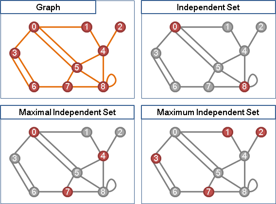
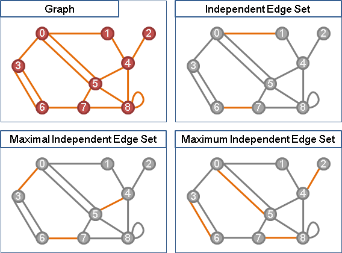
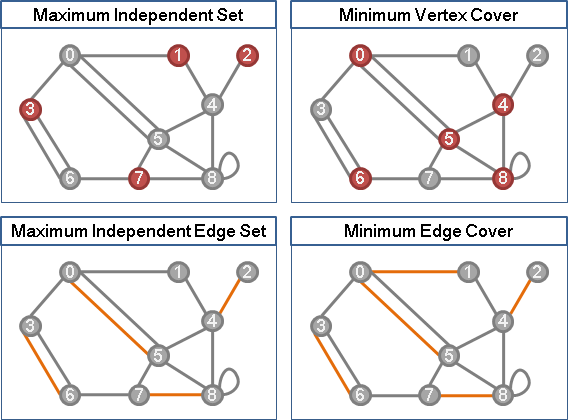
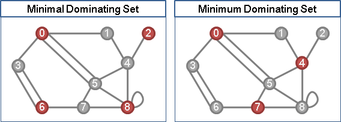
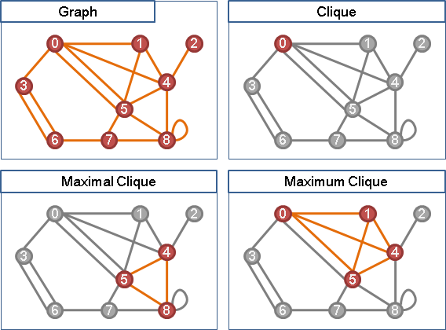

Independent Set
程度★★ 難度★
Independent Set
無向圖上，選定數點，互不相鄰，稱做「獨立集」。
Maximum Independent Set (NP-complete) 無向圖上，點數最多的Maximum Independent Set。 Minimum Independent Set in Tree (P) 當給定的圖是樹，得利用Greedy Method求解。
UVa 193 11065 11069
Independent Edge Set（Matching）
無向圖上，選定數邊，互不相鄰，稱做「邊獨立集」。正是先前介紹的「匹配」。
Pack與Cover相互對應
Pack針對點與點、邊與邊，Cover針對點與邊、邊與點。
最大點獨立集、最小點覆蓋，兩者恰好互補。|Maximum Independent Set| + |Minimum Vertex Cover| = |V|。
各種點獨立集、各種點覆蓋，恰好一一對應、兩兩互補。
最大邊獨立集（最大匹配）、最小邊覆蓋，兩者幾乎相等，差異只在於未匹配點所連接的邊。|Maximum Independent Edge Set| + |Minimum Edge Cover| = |V|。
各種邊獨立集、各種邊覆蓋，沒有一一對應。
Dominating Set
程度★★ 難度★
Dominating Set
無向圖上，選定數點，使所有點與之相鄰，稱做「支配集」。
Minimal Dominating Set、Maximal Independent Set，兩者完全相等，一一對應。支配與獨立的均衡界線，若離若即，可以當作開關機制。
Minimum Dominating Set (NP-complete) 無向圖上點數最少的Dominating Set。 Minimum Dominating Set in Tree (P) 當給定的圖是樹，得利用DP求解。
UVa 10160
Edge Dominating Set
無向圖上，選定數邊，使所有邊與之相鄰，稱做「邊支配集」。
Minimum Edge Dominating Set (NP-hard) 無向圖上邊數最少的Edge Dominating Set。
Clique
程度★★ 難度★★
Clique
無向圖上，完全子圖，即是所有兩點之間都有邊的子圖，稱做「團」。
Maximum Clique (NP-complete) 無向圖上點數最多的Clique。 Maximum Weight Clique (NP-hard) 無向圖上權重最大的Clique。
Vertex Cover ⇔ Independent Set ⇔ Clique
Vertex Cover：一個點集合，所有邊皆與之相鄰。 Independent Set：一個點集合，這些點必不相鄰。 Clique：一個點集合，這些點兩兩相鄰。
一張圖的（最大）獨立集、（最小）點覆蓋，恰好互補。
一張圖的（最大）獨立集，即是補圖的（最大）團。
點覆蓋、獨立集、團，三者是等價問題，可以互相轉換。
UVa 11159 12083 12168 Sphere 3196
列舉Maximal Clique（Bron-Kerbosch Algorithm）
尋找最大團是NP-complete問題，沒有快速的演算法。因此，列舉所有的Maximal Clique，從中找到Maximum Clique，不失為一個務實的方法。
http://en.wikipedia.org/wiki/Bron–Kerbosch_algorithm
R: 目前的clique。 P: 可以增大目前clique的點集合。接下來要列舉的點。 （與目前clique上所有點皆相鄰的點，構成的集合） X: 可以增大目前clique的點集合，但是先前已經列舉過。用來避免重複列舉。
此演算法採用backtracking。改變列舉順序、調整pruning方式，就會得到不同的時間複雜度。
陽春版本的時間複雜度是O(n*3^(n/3))。
選擇適當的pivot，讓各階段列舉的點都是最少，時間複雜度加速為O(3^(n/3))。
點的列舉順序採用degeneracy order，時間複雜度加速為O(d*n*3^(d/3))，其中d是原圖的degeneracy。
下面提供的實作是隨意選擇pivot，稍微減少列舉的點。
UVa 10475 ICPC 6309
Partially Ordered Set（Under Construction!）
程度★★ 難度★★
Partially Ordered Set（Poset）（Transitive Acyclic Digraph）
Dilworth's Theorem